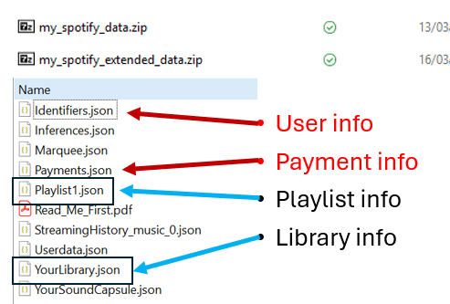
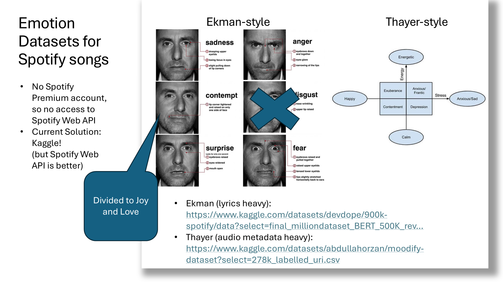
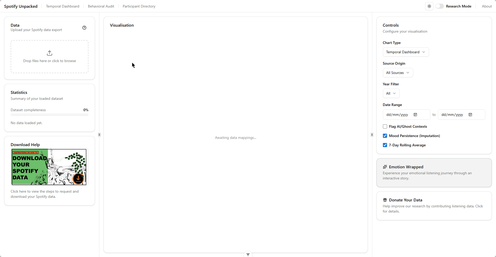
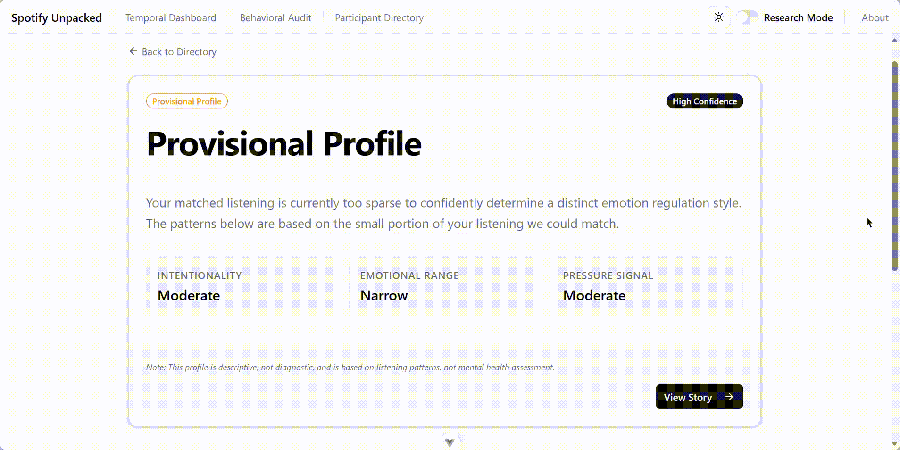
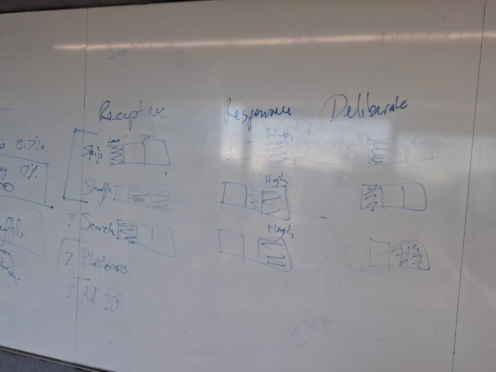
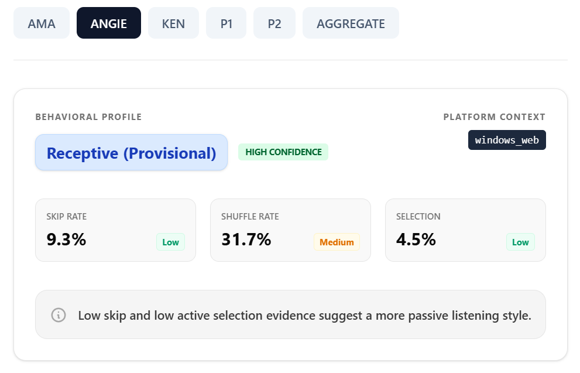

Kenzi Lamberto kenzilamberto
MDAP Intern
Master of Data Science (Science)
- Spotify Wrapped Unpacked Supervised by Amanda Belton, Dr. Daniel Russo-Batterham
About me

A data science student, looking to make impact in life. Previously, I studied Actuarial Science in Bogor Agricultural University and worked for three years back home (Indonesia). This internship showed me that sometimes life is more than just a profit in the financial report :D
More pics
Intern’s report
MDAP Internship Project
Spotify Wrapped Unpacked: Music Data and Student Behaviour
My Wonderful Mentors
Amanda Belton
She is a data scientist working with researchers to visualise data. She works with playful approaches and empathetic design principles to communicate research data visually, into the digital realm. Her work uses animation and mixed reality in accessible information designs.
Daniel Russo-Batterham
He came from a humanities background and became increasingly interested in finding ways to analyse, visualise and understand large corpora of music and text, so he developed the skills to do this. Eventually he realised that the Data Science skills could be applied much more broadly into the field of music.
Technical Side
Introduction
MDAP collaboration with Faculty of Fine Arts and Music. The big idea of this project is explore whether it is feasible to understand why university students choose to listen to selected songs by examining a combination of Spotify listening history data and direct reflections provided through interviews.
Specifically, we will examine how participants feel about accessing and sharing their extended listening history from Spotify; whether it is feasible to extract meaningful data about what, when and how often they choose songs as the basis for a further discussion; and, how participants describe why they have chosen those songs once provided with data about what, when and how often they selected those songs.
My Portion of the Project
We are currently working in the first stage, data collection. My task is to deep-dive into the Spotify Data that was gracefully provided by some collaborators to use for our research, and make insights that will be useful. We can call this stage “prototyping”.
Hopefully this will be useful for our collaborators and students who are going to participate in this research.
- Data Collection: Discovered that students might be only willing to share some parts of their Spotify data (listening history), but not the additional data (playlist, library, search queries, etc.). This is because that additional data are sent by spotify together with personal data (payment data and etc.), which could be a privacy concern for students.

I had to think about how to deal with this missing context and build pipelines to handle the (missing) data gracefully.
- Emotion Mapping: Integrated emotion datasets (Ekman (lyrics-based) and Thayer (audio-based) models) that connect to student listening history data and produce emotions based on the lyrics and/or audio metadata.

In the future, it will be useful to combine the models with interview transcript to create a more comprehensive emotional understanding of the user. Using spotify API and model the emotion from based on students’ Spotify data (resulting in better emotional view of the data) can also be an approach in the next stages of this project.
- Temporal Dashboard: Developed an interactive Temporal Dashboard that visualises how a student’s emotions change over time, using the Ekman and Thayer models.

- Actuarial Insights: Built “wrapped style” cards based on students’ data, utilising actuarial credibility measures to ensure statistical significance.

- LLM Prototyping: Explored and tried to build an LLM model to automatically provide interview prompts based on user data, but discontinued (might be revived in future, especially with the interview transcripts).
New Direction:
Collaborators said the ethics level required for dealing with emotion is too high, so we have a new direction. To focus more on the behavior profile based on skips, shuffles, and other available data from the dataset itself.
- Made “behaviour profile” based on the new directions from collaborators and supervisors.


What I learned
-
Visualizing Data Effectively:
I learned the difference between simply plotting numbers and actually telling a story. For instance, transforming our emotional timelines from standard line charts into stacked area charts made it significantly easier to digest the total volume of emotions.
We also had to build a custom “Local Maxima” peak-detection algorithm to ensure we were highlighting true emotional signals on the dashboard rather than just arbitrary calendar dates.
-
Bridging Backend and Frontend Architecture:
I learned how to decouple configuration from the source code. By utilizing Pydantic models in Python to establish research thresholds (like skip rates or emotion shifts) and securely passing those to the Vue frontend via a
config.jsonand.envfile, we made the entire instrument dynamically adjustable for future researchers without them needing to alter the core codebase. -
Failure is Progress:
Discarding prototypes (like the early LLM prompt generator) was initially frustrating, but failure means you have learned what doesn’t work and found a clearer path forward.
-
Context is Everything:
Working with the Spotify Extended Streaming History exports and understanding the human context behind the data is crucial. For example, realizing that preserving “empty” or missing listening data is sometimes just as important as the data itself to avoid artificially skewing a student’s timeline.
-
Adaptability:
A project can change directions rapidly (like our ethics pivot from pure emotion tracking to the Banded Behavioral Model based on skips and shuffles), so always be prepared to adapt and restructure the pipeline.
Overcoming Technical Issues
A major technical hurdle was dealing with incomplete or sparse data. Students often listen to “niche” tracks that are not mapped to our emotion datasets (or the datasets might also be too small, better to model it ourselves in the future with Spotify API). Currently, I overcame this by implementing a Nearest-Neighbor Imputation algorithm, which carries forward previous emotional states to fill gaps and maintain a continuous, readable timeline.
I also had to learn how to bridge Python backend data with the Vue frontend by implementing Pydantic models for seamless threshold configuration. After that, the configuration must be stored in a Pydantic way so that future users can modify it all in one place.
Personal Side
Why I joined MDAP
I know from my friends that MDAP is an amazing place to learn how it feels to be in a world class research collaboration environment. It actually is!
My Journey in MDAP
I was very overwhelmed and excited at the beginning. I remember my first week was a struggle as I was adjusting to a new environment, learning new tools & spotify data, and getting to know my supervisors & peers.
MDAP was the first thing I focused in for this semester (outside of my studies). But then I suddenly had two tutoring classes (for the same subject) assigned to me, so I had to learn to juggle all of them. I ended up working a lot of hours (around 10 hours each for MDAP and tutoring) for the semester. It was quite a lot to handle, so I had to learn to manage my time and prioritize tasks.
MDAP helped me a lot in time management and prioritisation. Since MDAP is more flexible in terms of working hours, I was able to adjust my schedule to fit my tutoring hours. At the same time, I also learned a lot from my supervisors (they are my mentors, and very kind!). Especially about how to approach research problems, think critically, as well as being okay with failure and changes. These made me feel more confident in my abilities.
Furthermore, I made new friendship with the MDAP members and we even made a matcha tea time session together!
I really enjoyed this semester in MDAP, and I would recommend it to any student who is interested in data analysis and research.